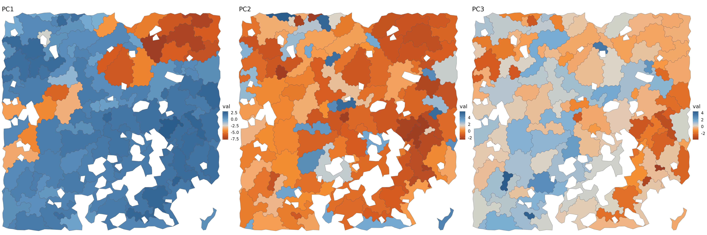
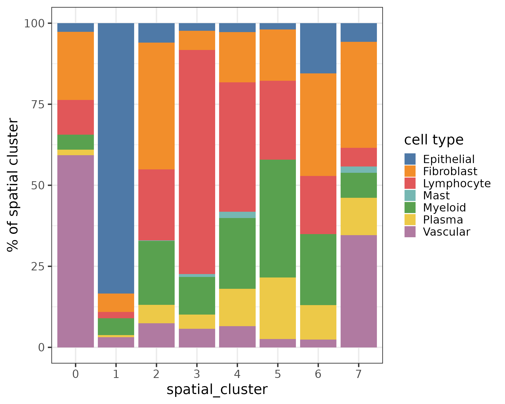

Quickstart: Using Tessera on a Single Sample
Source:vignettes/vignette_basic.Rmd
vignette_basic.RmdLibs
suppressPackageStartupMessages({
library(tessera)
## Downstream analysis in Seurat V5
library(Seurat)
## Plotting functions
## Not imported by Tessera
library(ggplot2)
library(ggthemes)
library(viridis)
library(patchwork)
})
fig.size <- function(h, w) {
options(repr.plot.height = h, repr.plot.width = w)
}Data
Small sample MERFISH dataset from Chen et al:
https://www.biorxiv.org/content/10.1101/2023.04.04.535379v1.abstract
data('tessera_warmup')
counts = tessera_warmup$counts
meta_data = tessera_warmup$meta_data
meta_vars_include = c('type')
fig.size(8, 8)
ggplot() +
geom_point(data = meta_data, aes(X, Y, color = type)) +
theme_void() +
scale_color_tableau() +
coord_sf(expand = FALSE) +
NULL
Some coarse grained cell types are predefined here, to help interpret the tiles we get below.
table(meta_data$type)
#>
#> Epithelial Fibroblast Lymphocyte Mast Myeloid Plasma Vascular
#> 634 588 829 18 491 206 411Get Tiles
Run the Tessera algorithm to get tiles in one function. The result is returns in two structures:
- dmt: cell-level information.
- aggs: tile-level information.
The two are tied together through dmt$pts$agg_id
res = GetTiles(
X = meta_data$X,
Y = meta_data$Y,
counts = counts,
meta_data = meta_data,
meta_vars_include = meta_vars_include,
)
#> Warning in GetTiles.default(X = meta_data$X, Y = meta_data$Y, counts = counts,
#> : No embeddings provided. Calculating embeddings using PCA.
#> Warning in GetTiles.default(X = meta_data$X, Y = meta_data$Y, counts = counts,
#> : No value for group.by provided. Analyzing as a single sample.
#>
#> Attaching package: 'purrr'
#> The following object is masked from 'package:data.table':
#>
#> transpose
dmt = res$dmt
aggs = res$aggs
fig.size(10, 30)
purrr::map(1:3, function(i) {
ggplot(cbind(aggs$meta_data, val=aggs$pcs[, i])) +
geom_sf(aes(geometry = shape, fill = val)) +
theme_void(base_size = 16) +
coord_sf(expand = FALSE) +
scale_fill_gradient2_tableau() +
guides(color = 'none') +
labs(title = paste0('PC', i)) +
NULL
}) %>%
purrr::reduce(`|`)
Cluster and label tiles
Let’s treat each aggregate as a unit of analysis.
obj = Seurat::CreateSeuratObject(
counts = aggs$counts,
meta.data = tibble::column_to_rownames(data.frame(dplyr::select(aggs$meta_data, -shape)), 'id')
)
## Seurat doesn't do sf shapes well
obj@meta.data$shape = aggs$meta_data$shape
## Represent each tile as the mean PC embeddings of all its cells
## NOTE: this tends to produce more biologically meaningful results than pooling gene counts per tile
rownames(aggs$pcs) = colnames(obj)
obj[['pca']] = Seurat::CreateDimReducObject(embeddings = aggs$pcs, loadings = dmt$udv_cells$loadings, key = 'pca_', assay = Seurat::DefaultAssay(obj))Do all the typical steps for Seurat clustering.
.verbose = FALSE
obj = obj %>%
NormalizeData(normalization.method = 'LogNormalize', scale.factor = median(obj@meta.data$nCount_RNA), verbose = .verbose) %>%
RunUMAP(verbose = .verbose, dims = 1:10, reduction = 'pca') %>%
Seurat::FindNeighbors(features = 1:10, reduction = 'pca', verbose = .verbose) %>%
Seurat::FindClusters(verbose = .verbose, resolution = c(2))
#> Warning: The default method for RunUMAP has changed from calling Python UMAP via reticulate to the R-native UWOT using the cosine metric
#> To use Python UMAP via reticulate, set umap.method to 'umap-learn' and metric to 'correlation'
#> This message will be shown once per sessionLet’s see the aggregate clusters in UMAP and physical space.
p1 = DimPlot(obj, reduction = 'umap', group.by = 'seurat_clusters') + scale_color_tableau('Classic 10')
p2 = ggplot(obj@meta.data) +
geom_sf(aes(geometry = shape, fill = seurat_clusters)) +
theme_void(base_size = 16) +
coord_sf(expand = FALSE) +
scale_fill_tableau('Classic 10') +
NULL
fig.size(6, 12)
(p1 | p2) + plot_layout(widths = c(1, 1))Transfer agg information to cells
dmt$pts$spatial_cluster = obj@meta.data$seurat_clusters[dmt$pts$agg_id]
p1 = ggplot() +
geom_sf(data = obj@meta.data, aes(geometry = shape), fill = NA) +
geom_point(data = dmt$pts, aes(X, Y, color = type)) +
scale_color_tableau() +
theme_void() +
coord_sf(expand = FALSE) +
NULL
p2 = ggplot() +
geom_sf(data = obj@meta.data, aes(geometry = shape, fill = seurat_clusters), alpha = .2) +
geom_point(data = dmt$pts, aes(X, Y, color = spatial_cluster)) +
scale_color_tableau('Classic 10') +
scale_fill_tableau('Classic 10') +
theme_void() +
guides(fill = 'none') +
coord_sf(expand = FALSE) +
NULL
fig.size(8, 20)
p1 | p2Let’s look at the composition of the spatial clusters.
fig.size(8, 10)
dmt$pts %>%
with(table(type, spatial_cluster)) %>%
prop.table(2) %>%
data.table() %>%
ggplot(aes(spatial_cluster, 100 * N, fill = type)) +
geom_bar(stat = 'identity', position = position_stack()) +
scale_fill_tableau() +
theme_bw(base_size = 20) +
labs(y = '% of spatial cluster', fill = 'cell type') +
NULL
We can also query genes in space as we usually do in cells.
feature = 'MKI67' ## dividing cells
# feature = 'CD3E' ## T cells
fig.size(8, 10)
ggplot() +
geom_sf(data = cbind(obj@meta.data, FetchData(obj, feature)), aes(geometry = shape, fill = !!sym(feature))) +
scale_fill_gradient(low = 'white', high = '#832424') +
theme_void() +
coord_sf(expand = FALSE) +
NULLSession Info
sessionInfo()
#> R version 4.4.3 (2025-02-28)
#> Platform: x86_64-pc-linux-gnu
#> Running under: Ubuntu 24.04.2 LTS
#>
#> Matrix products: default
#> BLAS: /usr/lib/x86_64-linux-gnu/openblas-pthread/libblas.so.3
#> LAPACK: /usr/lib/x86_64-linux-gnu/openblas-pthread/libopenblasp-r0.3.26.so; LAPACK version 3.12.0
#>
#> locale:
#> [1] LC_CTYPE=C.UTF-8 LC_NUMERIC=C LC_TIME=C.UTF-8
#> [4] LC_COLLATE=C.UTF-8 LC_MONETARY=C.UTF-8 LC_MESSAGES=C.UTF-8
#> [7] LC_PAPER=C.UTF-8 LC_NAME=C LC_ADDRESS=C
#> [10] LC_TELEPHONE=C LC_MEASUREMENT=C.UTF-8 LC_IDENTIFICATION=C
#>
#> time zone: UTC
#> tzcode source: system (glibc)
#>
#> attached base packages:
#> [1] stats graphics grDevices utils datasets methods base
#>
#> other attached packages:
#> [1] purrr_1.0.4 patchwork_1.3.0 viridis_0.6.5 viridisLite_0.4.2
#> [5] ggthemes_5.1.0 ggplot2_3.5.1 Seurat_5.2.1 SeuratObject_5.0.2
#> [9] sp_2.2-0 tessera_0.1.5 Rcpp_1.0.14 data.table_1.17.0
#>
#> loaded via a namespace (and not attached):
#> [1] RColorBrewer_1.1-3 jsonlite_1.9.1 magrittr_2.0.3
#> [4] spatstat.utils_3.1-2 farver_2.1.2 rmarkdown_2.29
#> [7] fs_1.6.5 ragg_1.3.3 vctrs_0.6.5
#> [10] ROCR_1.0-11 spatstat.explore_3.3-4 htmltools_0.5.8.1
#> [13] sass_0.4.9 sctransform_0.4.1 parallelly_1.42.0
#> [16] KernSmooth_2.23-26 bslib_0.9.0 htmlwidgets_1.6.4
#> [19] desc_1.4.3 ica_1.0-3 plyr_1.8.9
#> [22] plotly_4.10.4 zoo_1.8-13 cachem_1.1.0
#> [25] igraph_2.1.4 mime_0.12 lifecycle_1.0.4
#> [28] pkgconfig_2.0.3 Matrix_1.7-2 R6_2.6.1
#> [31] fastmap_1.2.0 magic_1.6-1 fitdistrplus_1.2-2
#> [34] future_1.34.0 shiny_1.10.0 digest_0.6.37
#> [37] colorspace_2.1-1 furrr_0.3.1 tensor_1.5
#> [40] RSpectra_0.16-2 irlba_2.3.5.1 textshaping_1.0.0
#> [43] labeling_0.4.3 progressr_0.15.1 spatstat.sparse_3.1-0
#> [46] httr_1.4.7 polyclip_1.10-7 abind_1.4-8
#> [49] compiler_4.4.3 proxy_0.4-27 withr_3.0.2
#> [52] DBI_1.2.3 fastDummies_1.7.5 MASS_7.3-64
#> [55] classInt_0.4-11 tools_4.4.3 units_0.8-5
#> [58] lmtest_0.9-40 httpuv_1.6.15 future.apply_1.11.3
#> [61] goftest_1.2-3 glue_1.8.0 nlme_3.1-167
#> [64] promises_1.3.2 grid_4.4.3 sf_1.0-19
#> [67] Rtsne_0.17 cluster_2.1.8 reshape2_1.4.4
#> [70] generics_0.1.3 gtable_0.3.6 spatstat.data_3.1-4
#> [73] class_7.3-23 tidyr_1.3.1 spatstat.geom_3.3-5
#> [76] RcppAnnoy_0.0.22 ggrepel_0.9.6 RANN_2.6.2
#> [79] pillar_1.10.1 stringr_1.5.1 spam_2.11-1
#> [82] RcppHNSW_0.6.0 later_1.4.1 splines_4.4.3
#> [85] dplyr_1.1.4 lattice_0.22-6 survival_3.8-3
#> [88] deldir_2.0-4 tidyselect_1.2.1 miniUI_0.1.1.1
#> [91] pbapply_1.7-2 knitr_1.49 gridExtra_2.3
#> [94] scattermore_1.2 xfun_0.51 matrixStats_1.5.0
#> [97] stringi_1.8.4 lazyeval_0.2.2 yaml_2.3.10
#> [100] evaluate_1.0.3 codetools_0.2-20 tibble_3.2.1
#> [103] cli_3.6.4 uwot_0.2.3 geometry_0.5.2
#> [106] xtable_1.8-4 reticulate_1.41.0 systemfonts_1.2.1
#> [109] munsell_0.5.1 jquerylib_0.1.4 globals_0.16.3
#> [112] spatstat.random_3.3-2 png_0.1-8 spatstat.univar_3.1-2
#> [115] parallel_4.4.3 pkgdown_2.1.1 dotCall64_1.2
#> [118] mclust_6.1.1 listenv_0.9.1 scales_1.3.0
#> [121] e1071_1.7-16 ggridges_0.5.6 rlang_1.1.5
#> [124] cowplot_1.1.3